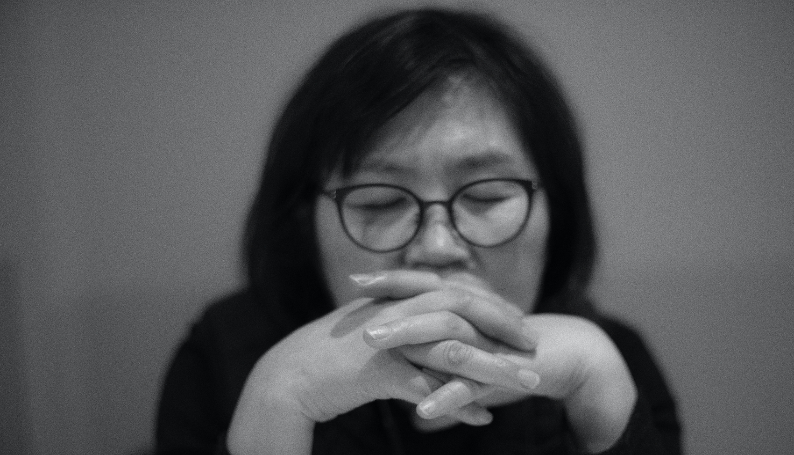

Jo Choon Ja
The Color of Korea
작가 소개
작품
연도별 대표작
수월관음도
평론
문의

은섬(恩暹) 조춘자(趙春子)
현(現) 한국미술협회, 동방예술연구회, 한국인물작가회, 멘토스 회원
개인전
2020
아트스페이스 해든 개관초대전
2018
조영스페이스 초대전 1부, 2부, 3부, 4부
2015
정부서울청사갤러리 초대전
2013
아트플라자갤러리 초대전, 서울
2011
레이디팔레스 갤러리 초대전, 서울
리서울갤러리 초대전, 서울
2010
우덕갤러리 초대전, 서울
메이준갤러리 초대전, 서울
춘추회 아트페스티발, 예술의전당
2009
장은선 갤러리, 서울
2006
월전미술상수상기념전 동산방, 서울
休 갤러리(건설회관), 서울
2003
백송화랑, 서울
1997
서울프레스센터, 서울
1986
YOON GALLERY, 서울
단체전 및 초대전
1980 - 2020
국내외 각종 전람회 250여회 출품
1981 - 2017
춘추회전
1998 - 2020
한국인물작가회전
2012 - 2019
멘토스회전
1997 - 2020
홍익여성한국화회전
2015
광복70년 대한민국미술축전 대한민국대표작가초대전
2012
HongKong Contemporary2012
한국인물의 표상전(우덕갤러리)
개교10주년기념 교수미전, 인사갤러리
인물작가전, 경향갤러리(서울), 수성아트피아(대구)
2011
LA 아트페어, 미국
SOAF(서울오픈아트페어), 코엑스
The Western Art Show 2011, LA, 미국
싱가폴 아트페어(Singapore)
마이에미아트페어(USA)
J.W Marriott Hotelfair(Seoul)
2010
시드니아트페어, 시드니, 호주
인천세계도시미술초청국제교류대전
한국인물표상전(우덕갤러리)
개교10주년기념 교수미전(인사갤러리)
2009
채색화 특별초대전, 한벽원갤러리
갤러리 아이 기획초대전
월전미술상 수상작가 초대전, 이천시립월전미술관
23人의 붓질전, 가가갤러리
2008
인물작가전, 토포하우스
홍익여류동문전, 서울시립미술관 경희궁 분관
2호전, 세종호텔갤러리
인하갤러리 초대전
2007
토포하우스 초대전
자인제노 초대전
책읽기의 행복, 노원문화예술회관
인물작가전, 서울갤러리
대한민국, 가나공화국 수교30주년기념전, Ghana
2006
한국인물 작가전, 갤러리 상
동양화 새천년전, 공평아트센터
한국미술의 현장展, 한국미술센터 개관기념
한국화의 힘, 예술의 전당
2005
한벽동인전, 공평아트센터
한국화여성작가 60인전, 경향갤러리
한국인물 작가전, 수갤러리
부채에 담은 한국의 명시전, 서울시립미술관
홍익여류 한국화전, 서울시립미술관
10인전, 수갤러리
2004
서리풀전, 양평미술관
한국화여성작가회전, 세종문화회관
한국화여성작가 특별초대전, LA문화원
홍익여류한국화전, 세종문화회관
오늘의 한국미술전, Gallery Watatu, Kenya
2003
한국화여성작가회전, 세종문화회관
홍익여류한국화전, 문예진흥원 마로니에 미술관
한국인물 작가전, 세종문화회관
2002
한국인물작가초대전, 모던화랑
KOWACA 국제예술제, 인사아트프라자
홍익대학교 총동문회전, 공평아트센터
홍익여류한국화회전, 모로갤러리
수묵과 채색의 만남전, 추제화랑
원소회 하노이초대전, 하노이 국립미술관
원소회전, 영등포 문화 예술회관
롯데화랑 초대전, 롯데화랑
2000
원소회 뉴델리 초대전, 인도
한국인물작가회전, 서울갤러리
갤러리 회화제, 조형갤러리
한ㆍ중 교류전, 국립대만예술교육관
1998
한ㆍ중 화가 교류전, 운현궁미술관
홍익여류한국화회전, 동덕아트갤러리
현대한국화정립전, 서울시립미술관
홍익동양화총동문회, 공평아트센터
한국인물작가회전, 백상기념관
한ㆍ중 화가교류전, 국립대만예술교육관
1997
한국화 현대미술 서울에서 마드리드까지, 스페인-마드리드
홍익여류한국화회전, 일민미술관
홍익동양화총동문회전, 홍익대학교 현대미술관
1996
후소회 창립60주년 기념전, 예술의전당
1995
봄빛전, 세계화랑
제29회 한국미술협회전, 예술의전당
14인의 작은그림전, 세계화랑
한국여성미술제, 서울시립미술관정도600년기념관
1992
10인의 기쁨전, 갤러리 붕새
1991
봄빛 채색화 11인전, 무진화랑
채색의 표현-6인전, 예일화랑
수상 및 경력
2006
제6회 월전미술상 수상
2002
제1회 춘추미술상 수상
2000
제19회 대한민국미술대전 심사위원
1986
제9회 중앙미전 입선
1985
제2회 후소회 공모전 장려상
1982 - 1988
대한민국미술대전 입선 7회
1980
제29회 국전 입상
2013
숭례문 종합점검단 조사위원
2016
경주 동궁월지 단청부문자문
1984 - 2013
강남대학교,부산대학교,창원대학교,
경기대학교, 홍익대학교, 고려대학교,
한국전통문화대학교 강사,
홍익여성한국화회 회장역임
1982
홍익대학교 대학원 동양화과 졸업
1980
홍익대학교 미술대학 동양화과 졸업